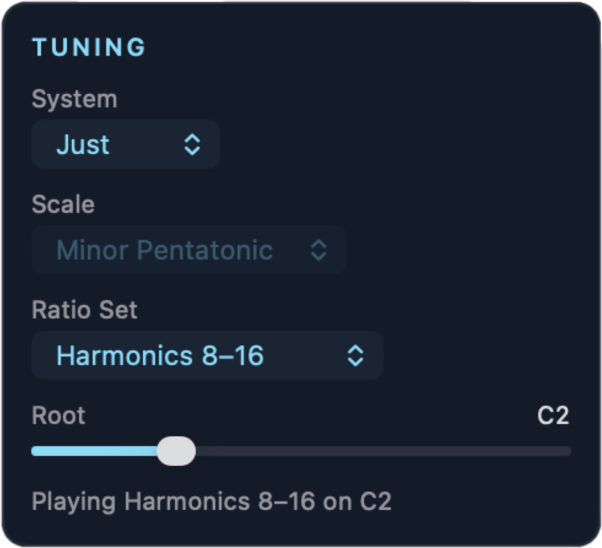

Tuning

| Control | Function |
|---|---|
| System | Choose one from the pop-up menu. - Auto: the conductor selects a scale or ratio set at each new mood. Dissonant moods select just intonation and dissonant sets more frequently. You can still set the root note. - 12-TET: equal temperament with the Scale you select. - Just: just intonation with the Ratio Set you select. |
| Scale | For 12-TET:
|
| Ratio Set | For Just:
|
| Root | The root note, from C1 to C5. The default is C3. |
The text at the bottom indicates the active tuning and root note. With System set to Auto, this line shows the conductor's current selections.
The sequence of the lists above goes approximately from consonant to dissonant.
The controls not applicable to the current tuning mode are hidden. (eg: Ratio Set is hidden when mode is 12-TET.)
In a DAW, a MIDI note sets the root. See Use in a DAW.